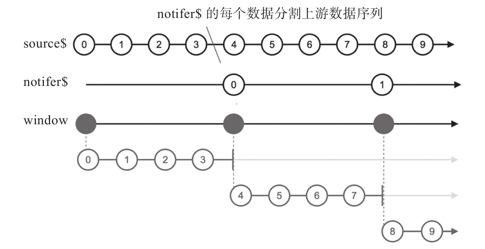
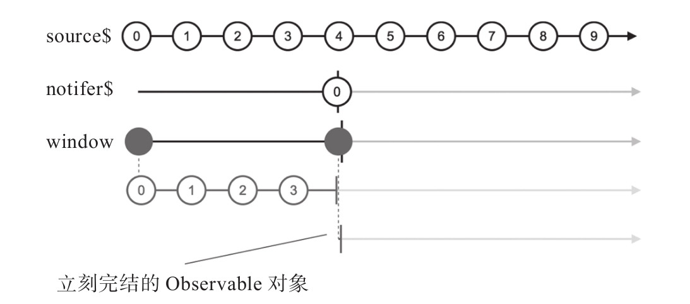

如果能够理解前面的无损回压控制操作符，那么理解window应该就不成问题，因为相对于windowToggle和windowWhen，window还是很简单的，它只支持一个Observable类型的参数，称为notifier$，每当notifer$产生一个数据，既是前一个缓存窗口的结束，也是后一个缓存窗口的开始。
使用window的示例代码如下：
const source$ = Observable.timer(0, 100); const notifer$ = Observable.timer(400, 400); const result$ = source$.window(notifer$);
其中，window的参数notifier$每隔400毫秒产生一个数据，也就是每400毫秒一个缓存窗口，对应的弹珠图如图8-9所示。

图8-9 window的弹珠图
上面的例子中notifer$是一个永不完结的数据流，如果notifier$会完结，那会怎样呢？修改上面的代码如下：
const notifer$ = Observable.timer(400); //400毫秒后产生一个数据之后完结
对应的弹珠就会是图8-10这样。

图8-10 notifer$会完结的window弹珠图
可以看到，notifer$产生唯一的数据之后立刻完结，会导致window产生的第二个内部Observable对象立刻完结，同时window产生的高阶Observable对象也会完结。
buffer有类似行为，对应于上面的例子，notfier$完结时，buffer产生的Observable对象会立刻完结。